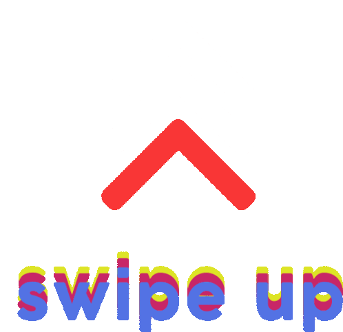

Hola, soy Inés Rodríguez
Desarrollador web
Me especializo en desarrollo web JS, bienvenido a mi portafolio!
Conocer másHola bienvenido a este resumé/portafolio
Mi nombre es José Inés Rodríguez Cardiel, soy de Zacatecas, Mexico, y yo soy Ingeniero en INGENIERIA de DESARROLLO Y GESTION DE SOFTWARE (IDGS)

En este documento podras conocerme un poco y ver algunas de mis habilidades como Desarrollador y ver algunos de mis proyectos